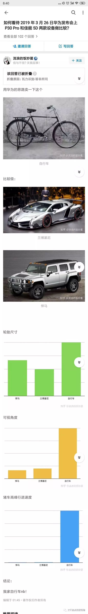

本文共计5091字
是张衔瑜的第82篇推文
之前看过一篇文章 名字叫做抑郁症是如何被制造出来的 说得有板有眼的 我想的是最近都在从认知科学层面反思自己或者别人 总之就是关于我们是怎么认识这个世界 然后又是为什么会产生这种认知的予以一些奇奇怪怪的打量
如果要培养氛围的话 可以先用Fleabag S01 E02 的这一段片头来作为序曲点醒一下 可能会有点过分魔性 当然第二季正在更新
一个简单的例子是节能减排 低碳环保 这本身是一个很好的很棒的概念诉诸行动（如果可以的话）自然也是很棒的选择 但其实想一想 我取一段我自己写在朋友圈里话放在这 来自与上周在听Seign 大学的一个教授做报告的时候听到一个说法之后的随笔
在化学系待了这么久，也看到了一堆能源转化blah研究了电池这些的新型能源，包括我开共享汽车出门也用过电力驱动的。
却没有想过：电池驱动只在使用的过程中看起来比石油能源更环境友好。在较长的时间内，从锂电池原料开采、制备、维修、尤其是报废，这一个流程走下来相较于化石能源更加环境污染。
刚刚听碳材料前沿的报告听到这个，觉得也还是一个没有想到过的方向。低层次有点tiffy recreation在用重复、速食来麻痹人群，稍高一点的在用所谓的新概念和论文审稿人来拉下另一批人。
一点水水的有趣阴谋论。
总结起来也就是说 环保焦虑的制造者首先将绿化的擦边球击打了出来 用各方面的推力将此变成一个具有普遍共识性质的推手 一边进行焦虑炒作的同时（倒不一定只有广告 也可能有多种导向政策制定等等） 然后推出自己所想要营销与售卖的产品 这个产品诚然 确实也可以保证人们在使用的时候降低并缓解了焦虑 却在较长时间线上完成这一动作时与其营销口号可以说是背道而驰
落到现实例子当中 也就是电动车厂商在售卖的时候 制造或借力现有的对环保的重视或焦虑 宣称自己的产品更加eco-friendly 用起来的时候也确实是这样 但转念一想 这种产品是否从对应的整个life span生命历程中达到了环境友好呢 恐怕是存疑的
我最近在看一个很老的纪录片 相比于我以前的选择口味来说 现在歌剧话剧中的悲剧作品更吸引我 回到纪录片 BBC《谁在引导我们消费-无节制消费的元凶 The Men Who Made Us Spend 2014》其实有一段年岁了但其中的提到的例子却依旧提醒人反刍现在的若干思路
第一集首先提出的便是 很多人觉得自己要买一件商品 却不知道自己为什么要买 这就是成功的营销 营销者 作为洞悉人类本质的存在 善于利用各种各样的本能恐惧与烦恼来推手自己的产品
譬如SUV sport utility vehicle 最早悍马汽车开始营销的时候就利用人们对于自己受保护和对外显侵略性地来进行广告 一款可以让其他人在后视镜里看到你的时候觉得 啊我可不能和这个家伙怼上 的汽车 在这里的普遍适用为 被保护和侵略性 营销出的是交通工具 而事实上 SUV的侧翻&翻车概率要高于普通小型商务用车一倍（according to the documentary）但主观地 确实缓解了人们心中对于陆上交通的心理焦虑 并以此跃居行业宝座
如果说交通只是一个小方面 有些人可能对此无感 比如没有驾照的人 但国内最近考驾照风靡 家长普遍觉得孩子进大学了好像没有补习班可以报了就报班去驾校学车吧 所以也还是有一定市场 可从这里看到更普遍的地方去 则是健康问题 每个人都逃不掉的 衰老和生病死亡
纪录片当中举出了一大堆 像降低胆固醇之类的药物 首先把胆固醇和心脑血管疾病挂上钩 然后向健康营养学的医生证明其中的关系 接着基于公众对于胆固醇和自己潜在疾病的相关关系挂钩了之后提供解决办法把自己的药物售卖出去 中文叫他汀类药物 Lipitor atorvastatin calcium 就是提到的例子
其实很难界定 到底哪些属于过度医疗和过度诊断 我也不是专业的医生 纪录片中提到了广告在推出的当时 使得欧美国家病理统计内的咨询心脑血管疾病以及进行的胆固醇检测及其药物开具的次数在一个月内上番三番 我觉得倒是很难把握什么是过度医疗和过度诊断
就像我站在现在的角度描述这一事件也可以有人在另一角度描述说 通过这一事件 我们极大地提高了公众对胆固醇与心脑血管疾病的认知 从而有效的预防和防范了未来面临的大规模健康杀手 可以说无论消费者多么地精致精细 就算自己的认知已经如何精细了 四万八千里之外仍然在营销如来佛指掌之内
为什么我们需要铁肩担道义的记者 为什么需要行业内的公知 其实来说 包括维他命水在内的许多关于健康和医疗问题的恐惧与焦虑营销 这些都还不是最直接的导因 Netflix 出的另一部纪录片 the Bleeding Edge 中提到的下一段在资本运转当中 材料科学与医疗是最根本的推动力 却除了颠覆性的创新之外 能促进行业进步的不过是资本之所向
我其实自己在去年过年的时候 在逛商场就发现了有低钠盐出现 正好今天南方周末刊发了一篇 盐的危险：饮食习惯与中国人的最大死因 不知道会不会有一堆低钠盐继续开始炒 我只是从化工的角度来讲的话 食盐的化学主成分是氯化钠 NaCl 我从未见过在晶体存在的时候 可以只把阳离子去掉的 那么低钠也就低氯 等于是现在买两包盐只能买原来一包盐的量 价格还贵一些 不知道是哪个精明的消费者在做这样亏本的买卖
当然也有人问说这是不是把钠盐换成钾盐或者换成别的盐啊 那其实就更好笑了 我们经历了那么多的化工过程 海水晒盐和多种多样的反渗透 膜材料设计以及离子选择 就是为了把粗盐精制去掉其中的杂质 稍微补一点碘在里面给你防治大脖子病 如果说先精制一遍然后再加钾盐 那买贵一点倒是符合买贵一点因为人力成本上来了 但完全没必要
就好像家里住五楼然后有很多冷冻水饺 本来只要给搬家公司从一楼搬到五楼的钱 现在搬家公司先搬到十楼再下来还和你说好累好累 你心疼地钱也多给了 要别人搬的冷冻水饺也化了好多 事实上完全没必要而且在化工过程后甚至说起来更差 还往里面补真是有趣极了
（放一碗很鲜的不加葱的花甲粉没事吧 总共有28个花甲我数过的）
当然手机膜也是 华为手机从P10 P20 一直到昨天开了发布会的P30 不管哪个厂家都是在竭尽全力想办法把自己的手机做好然后做薄结果现在反倒有人觉得太薄了在自己手上会滑落 然后加一个cumbersome很重的手机外壳 还贴个膜 好像自己花几十不到一百块钱的手机外保护就可以让原本几千块买的手机更好用一些似的 我要是设计者早就哭晕在厕所了 自己设计了这么久的东西没有人能够用得上 多么实用的东西被当成了花瓶供着 无聊至极
关于华为最近出的这个也有很多可以黑和洗白的 发布会上主要谈到的是拍照功能 在我先声明我自己公众号拍的照片都是用我现在手上的一台华为手机拍的 并且我支持国货的情况下 放两张截图来给两个观点但不予置评（毕竟我也用不到）

以前中学时代做过一篇阅读
是毕淑敏写的关于流行色的文章
标题是内在的洁净
现在的女子，对于服装的要求越来越多了。每年都有流行色，如果你还穿着去年的流行色，那就是落伍，就是老土，就是搁浅在时代潮流沙滩上的孤独苦蚌。
有一次，我得到一个邀请，担当某服装委员会的顾问。会上，坐在邻座的是一位对服装颇有研究的先生，我和他聊起来，问，你们每年的权威发布，都依照什么原则呢？
那位先生一笑，说，毕作家，你太认真了。流行色并没有你想象的那样复杂，不过就是一个概念。你想啊，服装这个东西，是要提前做准备的。不能天气已经很热了，才做薄薄夏衣。也不能寒风刺骨了，才张罗棉袄。特别是面料，更要有担前量。那么，大家根据什么来制定计划呢？简单地说，就要开一个会，大家坐在一起，讨论一番，定一个主色调，然后还有一些辅助的色系，最后就按这个原则去生产了。到了那个季节，街上就都是这种色系的衣服，流行色就开始流行了。
我听得似懂非懂，说那么如果这个色彩今年流行不起来怎么办呢？那位先生可能觉得我顽固不化，蔼然教导说，这怎么可能呢？只要所有的厂家都齐心合力，都出产这个颜色的衣服，当然就会流行起来啊！再有了，我们既然制定了这个策略，就会大张旗鼓地宣传，比如说环保啦，沙漠啦，海洋啦，太空啦……找概念啊，开动一切机器来轰炸。另外还有一个法宝，就是让偶像代言。年轻人喜欢从众，一看他们心仪的艺人都穿上这个衣服了，当然会趋之若骛……
听到这里，我只有拼命点头的份儿了。我就是再愚笨，也明白在这样强大的攻势之下，流行色当然生命力蓬勃。
那位先生看我茅塞顿开的样子，表示满意，说，如果你是生产厂家，你会怎样想？
我说，那还用问？当然是希望买我衣服的人越多越好。
那位先生说，对啊，人心同理。要是谁都新三年旧三年，缝缝补补又三年，服装厂还不得关门？所以，每年的流行色一定要和上一年的有所不同，让你不能以旧充新，鱼目混珠。再有就是造舆论。让你觉得自己穿得不是流行色，就有一种自卑感，不入流，被社会抛弃……这样的舆论氛围一旦形成，从众心理浓厚的人，就会被裹挟而进，成了流行色的俘虏。厂家就会微笑。
我说，如果我硬是不买流行色，你们能怎么样呢？
那位先生和气地笑起来，说，那我们一点办法也没有。不跟着流行色走的人，通常分两类。一种是特别是贫穷，他们原本就没有能力不停地置换服装，所以，也不是服装行业的消费者，基本可以忽略不计。再有一种，就是特别有品位的人，他们不在乎流行什么，只在乎什么东西对自己是最适合的。对这后一种人，我们也是鞭长莫及无可奈何啊。
那一天的会议，对我这样一个服装盲来说，的确醍醐灌顶。我想，我似乎不能算作买不起衣服的人，但也绝对不是有独到见解，能孤傲地挺立于潮流之外的人。对于我们普通人来说，如何在光怪陆离的现代服装海洋中，安然自得地驾着自己的小船，吟唱渔歌呢？
我想最好的方式，就是保持衣物的洁净，不追赶时髦。因为流行色的实质，多是商人的利益。它铁定了主意让你总是气喘吁吁手忙脚乱地追赶潮流。我不需要那么多的衣服。如果你的衣服有污渍，无论它多么华贵，在没有清洗干净之前，不要穿着它们出门。华贵表达着你的财富，而洁净证明着你的口质。
衣服只是外包装，内在的精神洁净才是最重要的。
好难啊微信改版之后引用不能超过三百字 而我引用别人的还是要打上引用符号 （其实引用自己的也打了但是就很奇怪 只是想要引用符号而已不是真的引用啊讲道理）
凝练词句的话 仿写文章到毕淑敏这般优雅和内秀 也不是不能去努力 我以为最重要的 也许还是在文章内核所传递出的一个观念 某一种特质或者是一个情绪 这才是更值得考量的存在（当然文字优美的文章谁都喜欢我也喜欢
最近地大概就是在我反思自己的生活和身边事情的时候 顺便读一点认知科学的书然后对自己重新打量 还是懂的东西太少了呀 不过看其实走在很前面的人呢 懂得很多也走得越来越难
可能生活到底还是只会越来越难 现在越努力 以后也越难吧
对于当代大学而言 除了排名第一的脱发和排名第二的猝死 学业上也是一万个人在贩卖焦虑吧 这里的营销推手要数新东方 新航道 以及至美前程 星光二外 宸熙英语blah 一类的教育辅导机构 作为考虑留学并且现在动摇还没有定下来的一员觉得 留学申请当中最大的焦虑贩卖在语言成绩
经常有宣传只提到几个信息点 这是谁 来自哪个学校 ta经过我们的语言培训之后到了哪个层次（TOEFL GRE IELTS 或者还有人考的德福和N1这些的） 接着就直接到了申请的学校有的甚至连专业也没有
在这个过程当中 很显然对所有申请留学的人而言 普遍共有的最大的就是语言成绩所以广告营销将这个排在第一位 接着的 虽然要申请的时候必然是在现在的学校已经快结束学业了但其实也还好还可以抢救于是把学校也列入了 就这样 关于英语（或者别的什么语言成绩）在申请当中的极大地位也就凸显了出来
但事实果真如此吗？
对于最大多数的非语言类学生 去到一个新的国度是去学知识的 而不是去学语言的 就换一个思路来说 在对方的国家里 能把语言成绩考好 说好本国语言的人多了去了 更别提还耳濡目染这个国家的文化 那凭什么你将要申请的学校就会因为你的语言成绩而高看一等呢 我觉得这个是申请的盲区了 即 语言成绩不应被夸大为申请的因素
申请分三项
英语成绩 GPA也就是平时成绩绩点 然后是科研经历
英语成绩决定能否日常交流到位 平时绩点是说以前的表现怎么样（当然所在的学校也很重要） 最后是科研经历在这个方向内已经做出了哪些成绩来 我要是去审核别人的材料 只会说看到有英语成绩达到基本要求就可以了然后最重要的是科研经历科研思想决定以后可以走多远 如果这里是空白的话就看相不相信对方学校的资质所给出的平时绩点 同时也是个参考
那这么看来 语言成绩就只是一个坎 有了成绩还能看 能过得去就表示可以交流 成绩好只是磨合期短一点顺畅一点 最重要的科研经历和平时成绩大概前六后四地这么区分开
我能看到的 作为硕博群体来说 最重要的是把研究做好 然后是在研究小组内的氛围搞好能和别人合作 然后才是融入这一块社会和群体 但给人的情感体验来说 却恰好是反向的 这三者能给我带来快乐的首先是融入社会圈子 然后是和同学同事合作最后是把研究做出成绩
所以这样地面对所谓的学习辅导机构 宣扬的种种作用固然是有用但是还是要多去读一点GRE考试里面作文部分的Argument 下次我可能开个单章专门找几个例题来做一下思维体操 实际上就是反思我们日常的推理研究过程 看看到底哪些是合乎逻辑的 在哪里做了假设然后哪些是抬杠哪些是确有其事
放两段我很喜欢的对话在最后面 想多了上面说的这些事 也需要一点点解压的来调剂一下 分别来自于我很喜欢的Rickand Morty S03 E09 （就是我经常喜欢发截图的那个）和 Fleabag S01 E04 不在话下